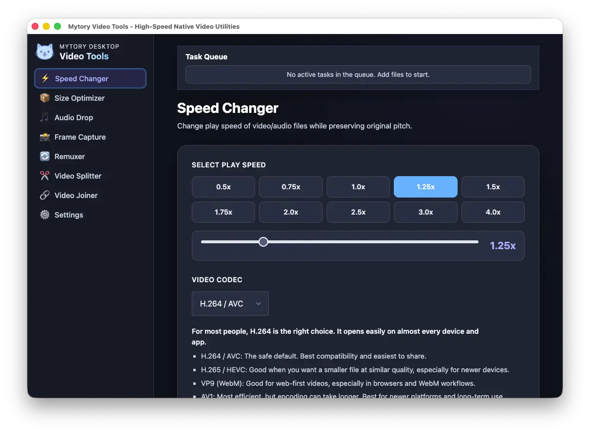
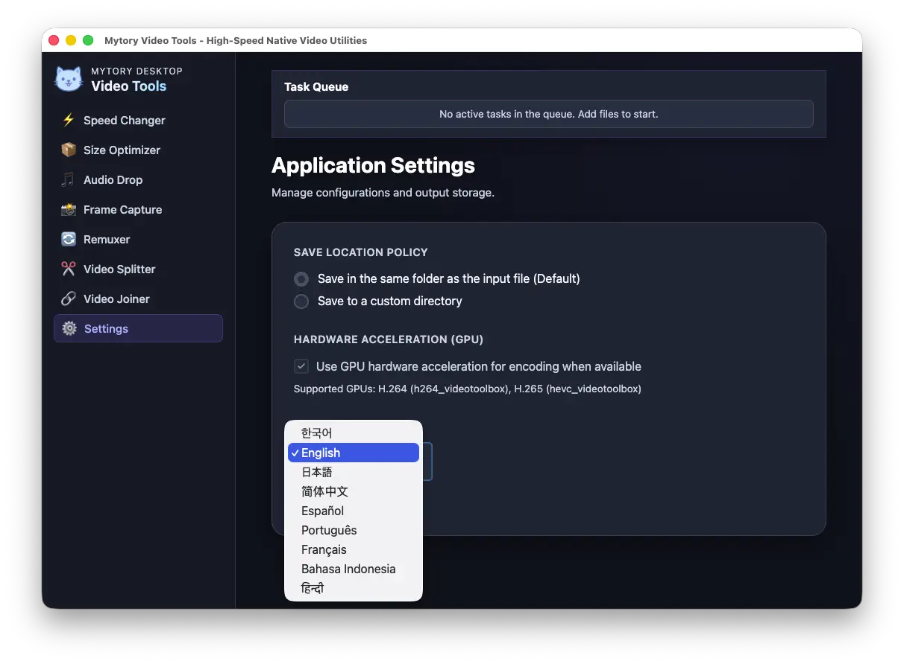

Alterador de velocidade
Altere a velocidade de reprodução de 0.5x a 4.0x com preservação de tom. Sem vozes de esquilo. Suporta H.264, H.265, VP9 e AV1 com aceleração de hardware.
Sete poderosos utilitários de vídeo em um único aplicativo desktop nativo. Acelere, comprima, divida, una, converta e capture vídeo com codificação acelerada por hardware. Sem uploads, sem limites.

Alimentado por padrões da indústria
Toda tarefa de vídeo que você precisa, desde ajuste de velocidade até concatenação sem perdas. Sem assinatura, sem upload na nuvem, sem limites.
Altere a velocidade de reprodução de 0.5x a 4.0x com preservação de tom. Sem vozes de esquilo. Suporta H.264, H.265, VP9 e AV1 com aceleração de hardware.
Comprima o vídeo para um tamanho de arquivo alvo com sua escolha de codec, qualidade e codificador de hardware. Encolha imagens 4K para compartilhar em um clique.
Capture quadros individuais, extraia em lotes em intervalos ou use detecção automática de cena com sensibilidade ajustável. Perfeito para miniaturas e storyboards.
Converta entre contêineres MP4, MKV e MOV sem reencodificar. Sem perdas e instantâneo. Preserva todos os fluxos.
Extraia faixas de áudio sem perdas ou converta para MP3, AAC, OGG ou WAV. Arraste um vídeo, obtenha o áudio.
Una vários vídeos com tratamento automático de compatibilidade. Reordene por arrastar e soltar, verifique a compatibilidade rapidamente e una em um clique. Lida com diferentes taxas de quadros com re-codificação inteligente.
Corte um segmento sem perdas definindo pontos de início e fim. Divisão extremamente rápida sem reencodificação. Ideal para cortar destaques ou preparar clipes para montagem.
No knobs to tweak. Mytory Video Tools picks sensible defaults for every task — from hardware encoder selection to output quality — so you get great results without digging through menus. Apple Silicon, NVIDIA, Intel, AMD — it just works.
Toda a interface está traduzida. Mude de idioma instantaneamente pela barra lateral. Sem necessidade de reiniciar.

Gratuito e de código aberto. Nenhuma conta necessária. Nenhum dado sai da sua máquina.
Boas ferramentas de vídeo existem. Mas encontrar uma que seja otimizada para as tarefas rápidas e adjacentes —cortar sem reencodificar, mudar a velocidade preservando o tom de voz, extrair áudio instantaneamente, trocar de contêiner em um clique, capturar quadros frame por frame— é surpreendentemente difícil.
Mytory Video Tools foi criado para coçar essa coceira. Não é outro editor de vídeo. É um canivete suíço para os momentos entre edições: quando você precisa dividir um clipe, unir segmentos, extrair uma trilha sonora ou converter um formato, e quer que seja feito já, sem perdas, com aceleração de hardware pronta para uso.
Sem uploads na nuvem, sem contas, sem assinaturas. Apenas código nativo, FFmpeg sob o capô e uma interface limpa que não atrapalha. Cada operação usa padrões sensatos — a aceleração de hardware é detectada automaticamente, os formatos de saída são pré-otimizados e você raramente precisa mexer em uma configuração para fazer o trabalho.
Licençad under GPL-3.0. Construído com Electron, FFmpeg, e inúmeras tentativas e erros. Contributions, issues, and feature requests are welcome on GitHub.
Ver no GitHub